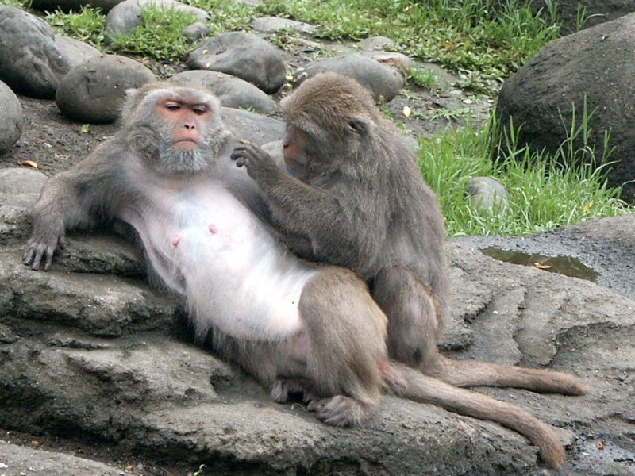
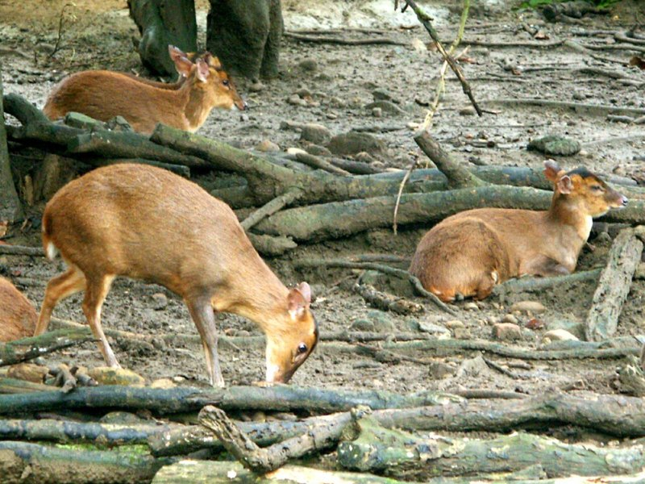
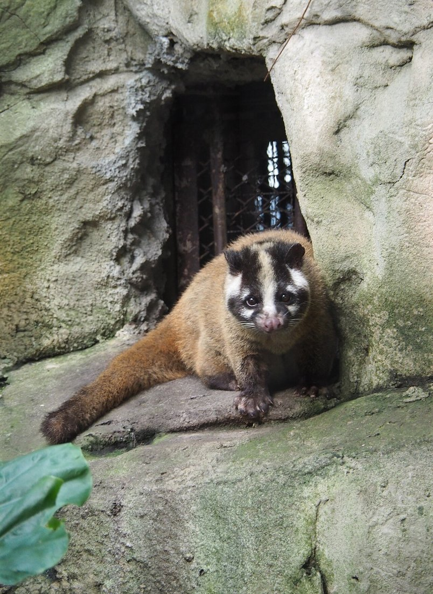
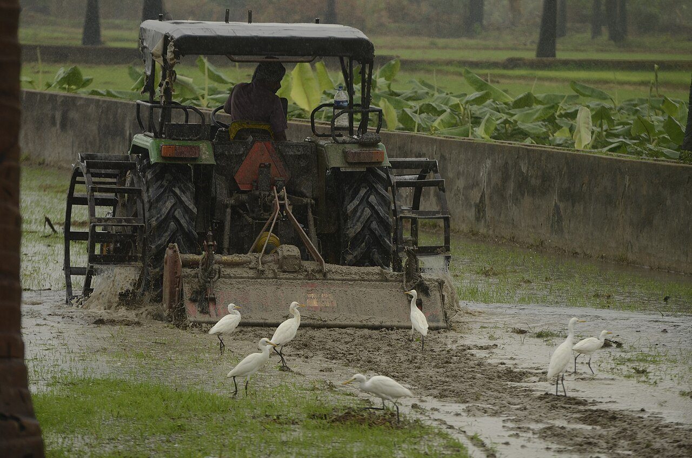

臺灣獼猴
為什麼要愛護牠們？
【待補】請訪談農場：獼猴會到田邊做什麼？農場怎麼和牠們相處？
攝於臺北市立動物園。KaurJmeb，CC BY-SA 2.0
田邊住著誰？
因為田埂留了草、不用毒鳥的方法，農場常有「農田好朋友」來拜訪：獼猴、山羌、野兔、麝香貓（白鼻心）、白鷺鷥。
點開每張卡片的「為什麼要愛護牠們？」

【待補】請訪談農場：獼猴會到田邊做什麼？農場怎麼和牠們相處？
攝於臺北市立動物園。KaurJmeb，CC BY-SA 2.0

田埂留下的草叢，讓膽小的山羌有地方躲藏、找東西吃。
攝於臺北市立動物園。KaurJmeb，CC BY-SA 2.0
【待補】請依提案「手繪插畫卡」畫一隻野兔，或放農場拍到的照片。

晚上才出來活動，會吃小動物和果實。【待補】請補上牠和稻田的關係。
攝於臺北市立動物園。Flickr，CC BY-SA 2.0（作者待補）

農人翻土時，牠們跟在後面找蟲吃，是田裡的好幫手。
示意照片（攝於印度）。PJeganathan，CC BY-SA 4.0

石虎吃老鼠。不用老鼠藥，石虎才不會吃到中毒的老鼠。【待查證】農場是否曾記錄到石虎？
標本照。氏子，CC BY-SA 4.0
照片多為動物園或外地拍攝的示意照；提案註明「動植物依確認結果繪製」，請以農場確認的物種為準。
田埂就是田和田之間的小路。留一點草，就像幫小動物留一條有屋頂的走廊，牠們可以安心地躲、安心地走。